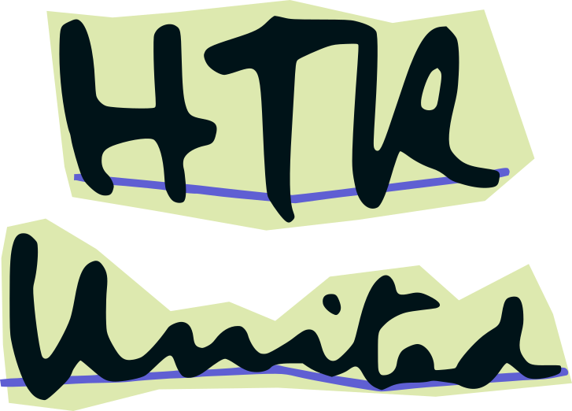

HTR-United est un catalogue qui répertorie des jeux de données d'entraînement hautement documentés utilisés pour les modèles de transcription ou de segmentation automatiques. HTR-United normalise les descriptions des jeux de données à l'aide d'un schéma, propose des recommandations pour l'organisation des dépôts de données et fournit des outils pour le contrôle de la qualité et la documentation continue. C'est un écosystème ouvert et transparent hébergé sur GitHub, conçu pour faciliter sa maintenance. HTR-United a été créé pour aider les projets à accéder rapidement à diverses données de vérité terrain pour entraîner des modèles sur des petits corpus.
Réutiliser les données
En tant que catalogue, HTR-United répertorie des jeux de données disponibles pour entraîner des modèles de reconnaissance de texte et, parfois, de segmentation. Ils sont disponibles dans des formats compatibles avec plusieurs logiciels de reconnaissance automatique de texte (ATR) : XML ALTO, XML PAGE, mais aussi des paires de fichiers TXT et d'images. Chaque jeu de données est soigneusement décrit selon notre schéma, fournissant des informations sur les conditions de création, le contenu du jeu de données, et les conditions de réutilisation.
Le catalogue peut être consulté sur ce site ou automatiquement analysé à l'aide des fichiers YAML ou JSON originaux.
Contribuer à HTR-United
Il existe de nombreuses façons de contribuer à HTR-United, la première étant d'ajouter votre jeu de données au catalogue ! Pour cela, assurez-vous que vos données sont disponibles en ligne et consultez Enregistrer de nouvelles données. Ensuite, remplissez le formulaire, générez une description et soumettez-la à notre dépôt GitHub. Vos données peuvent provenir de n'importe quel logiciel OCR/HTR, mais pour qu'elles puissent être réutilisées par d'autres, le jeu de données publié doit inclure des images, des transcriptions, une licence claire, et des métadonnées.
Il est également possible de contribuer à HTR-United en aidant à développer et à maintenir les outils associés, en ouvrant des discussions sur le schéma de description, ou même en proposant des améliorations pour ce site web.